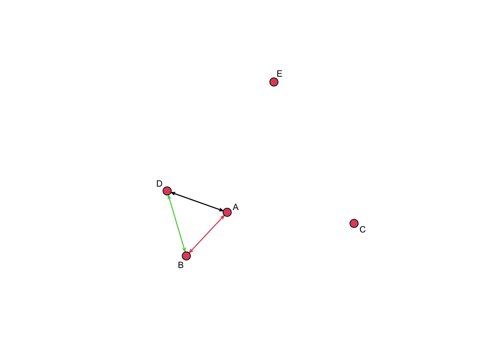
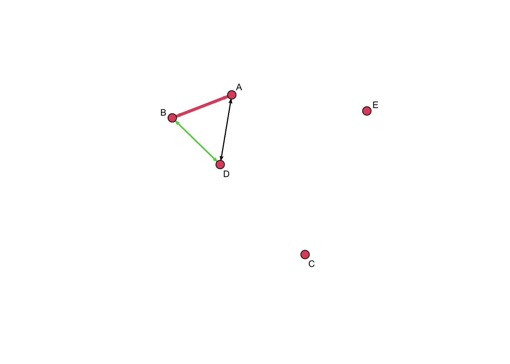
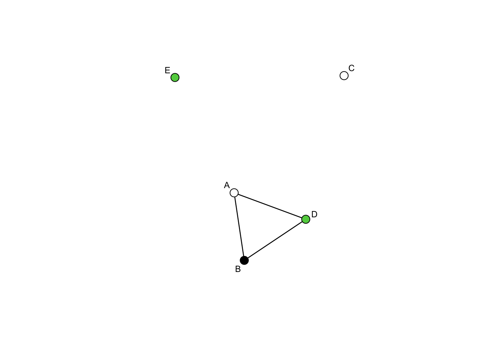

Week 10
Nils W Metternich, Luis Schenoni, and Sigrid Weber
2022/23
Inferential Network Analysis in R (Part 3)
This week we look at the second major approach to estimating networks: Latent network models. These are different to ERGMs as they are more concerned about unbiased estimatation of sender, receiver, and dyad effects in the presence of third-order network effects, rather than actually testing which third-order network effects are present. In a sense, latent network models are complicated random effects models, where we try to account for unobserved (e.g. unmeasured third order network effects). We will use the MID and contiguity data to explore this method, but using the MID count as an outcome. Hence, whereas in the past weeks we have focused mostly on binary outcomes, we will now work with weighted network. Since, some of you might have weighted networks, we also will plot and them and introduce the stength of ties as an additional measure.
This week we also use two additional packages. Igraph: which is an alternative to statnet and has its own plotting and network statistics functions. We will only use it to calculate the strength of ties. Then there is the amen package by Peter Hoff, which allows us to estimate latent network models.
library(igraph)##
## Attaching package: 'igraph'## The following objects are masked from 'package:stats':
##
## decompose, spectrum## The following object is masked from 'package:base':
##
## unionlibrary(cshapes)## Registered S3 method overwritten by 'dplyr':
## method from
## print.location geojsonlintlibrary(statnet)## Loading required package: tergm## Loading required package: ergm## Loading required package: network##
## 'network' 1.18.1 (2023-01-24), part of the Statnet Project
## * 'news(package="network")' for changes since last version
## * 'citation("network")' for citation information
## * 'https://statnet.org' for help, support, and other information##
## Attaching package: 'network'## The following objects are masked from 'package:igraph':
##
## %c%, %s%, add.edges, add.vertices, delete.edges, delete.vertices,
## get.edge.attribute, get.edges, get.vertex.attribute, is.bipartite,
## is.directed, list.edge.attributes, list.vertex.attributes,
## set.edge.attribute, set.vertex.attribute##
## 'ergm' 4.3.2 (2022-11-21), part of the Statnet Project
## * 'news(package="ergm")' for changes since last version
## * 'citation("ergm")' for citation information
## * 'https://statnet.org' for help, support, and other information## 'ergm' 4 is a major update that introduces some backwards-incompatible
## changes. Please type 'news(package="ergm")' for a list of major
## changes.## Loading required package: networkDynamic##
## 'networkDynamic' 0.11.2 (2022-05-04), part of the Statnet Project
## * 'news(package="networkDynamic")' for changes since last version
## * 'citation("networkDynamic")' for citation information
## * 'https://statnet.org' for help, support, and other information## Registered S3 method overwritten by 'tergm':
## method from
## simulate_formula.network ergm##
## 'tergm' 4.1.1 (2022-11-07), part of the Statnet Project
## * 'news(package="tergm")' for changes since last version
## * 'citation("tergm")' for citation information
## * 'https://statnet.org' for help, support, and other information##
## Attaching package: 'tergm'## The following object is masked from 'package:ergm':
##
## snctrl## Loading required package: ergm.count##
## 'ergm.count' 4.1.1 (2022-05-24), part of the Statnet Project
## * 'news(package="ergm.count")' for changes since last version
## * 'citation("ergm.count")' for citation information
## * 'https://statnet.org' for help, support, and other information## Loading required package: sna## Loading required package: statnet.common##
## Attaching package: 'statnet.common'## The following object is masked from 'package:ergm':
##
## snctrl## The following objects are masked from 'package:base':
##
## attr, order## sna: Tools for Social Network Analysis
## Version 2.7-1 created on 2023-01-24.
## copyright (c) 2005, Carter T. Butts, University of California-Irvine
## For citation information, type citation("sna").
## Type help(package="sna") to get started.##
## Attaching package: 'sna'## The following objects are masked from 'package:igraph':
##
## betweenness, bonpow, closeness, components, degree, dyad.census,
## evcent, hierarchy, is.connected, neighborhood, triad.census## Loading required package: tsna##
## 'statnet' 2019.6 (2019-06-13), part of the Statnet Project
## * 'news(package="statnet")' for changes since last version
## * 'citation("statnet")' for citation information
## * 'https://statnet.org' for help, support, and other information## unable to reach CRANlibrary(amen)Preparing the data
We now load the MID data and construct our border adjacency matrix. This is similar to last week, but we stop at the matrix stage. This is because amen simply takes matrices and arrays as input and not network objects like ERGMs did last week.
#Distance matrix
dist.matrix <- distmatrix(date=as.Date("2002-1-1"),type = "mindist",useGW = FALSE)
adj.matrix <- ifelse(dist.matrix==0,1,0)
diag(adj.matrix) <- 0 #need to set the diagonal to 0
#MID matrix
mid <- read.csv("C:/Users/sigri/Dropbox/8_Teaching/Spread of Conflict in Int. Relations/networkCourse/data_week4/dyadic_mid_4.02.csv") #First we load the data. You will need to change the path to do this.
mid <- mid[mid$rolea==1,c("statea","stateb","strtyr")]
states <- unique(c(as.character(mid$statea),as.character(mid$stateb)))
midMat <- matrix(0,nrow=length(states),ncol=length(states)) #
rownames(midMat) <- states
colnames(midMat) <- states
for(i in 1:dim(mid)[1]){
midMat[as.character(mid$statea[i]),as.character(mid$stateb[i])] <- midMat[as.character(mid$statea[i]),as.character(mid$stateb[i])]+1
}
#Making sure that MID and Adjacency matrix have same states
joint.states <- intersect(colnames(midMat), colnames(adj.matrix))
midMat <- midMat[joint.states,joint.states]
adj.matrix <- adj.matrix[joint.states,joint.states]Estimating with amen
Now that we have the our outcome and our independent variable, we are ready to estimate a latent network model with amen. First, we define our outcome Y (count of MIDs). Second, we define our main explanatory variable Xdyad (whether or not two states share a border). In amen, we can also specify sender, receiver, and additional dyadic explanatory variables, but in this example we only have one observed explanatory variable (matrix).
#outcome
Y <- midMat
Xdyad <- adj.matrix
fit_ar1<-ame(Y,Xdyad,family="nrm",plot=FALSE,R=2,nscan =
1000, burn = 200, odens = 10)
summary(fit_ar1)
#va within-row covariance (heterogeneity of senders)
#vb within-column covariance (heterogeneity of receivers)
#cab row-column covariance ()
#rho reciprocity
#ve within dyad covariance (heterogeneity of dyads)
plot(fit_ar1$U) # sender network
plot(fit_ar1$V) # receiver networkPlotting and measuring strength of ties
In the past weeks, we mainly dealt with binary variables or at least treated them as such. Now we will look at weighed networks. Let us start with a matrix of five nodes and add some weighted links. The important bit here is that once we have the weighted matrix, we need to slightly change the options in the network function to tell R that the matrix should be treated as a weighted network. Note that we are using the plot and not the gplot function in this example.
my.matrix <- matrix(data=0,nrow=5,ncol=5)
colnames(my.matrix) <- c("A","B","C","D","E")
rownames(my.matrix) <- c("A","B","C","D","E")
#A<-B
my.matrix[1,2] <- 10
#B<-A
my.matrix[2,1] <- 10
#B<-D
my.matrix[2,4] <- 3
#D<-B
my.matrix[4,2] <- 3
#A<-D
my.matrix[1,4] <- 1
#D<-A
my.matrix[4,1] <- 1
my.nodes <- c("A","B","C","D","E")
#Ignoring weights of the imported graph is the default behavior of network. To import weight, specify ignore.eval = FALSE and names.eval = "weight".
my.net <- network(my.matrix,
matrix.type='adjacency',
directed = TRUE,
ignore.eval=FALSE,
names.eval='weight')
network.vertex.names(my.net) <- my.nodes
summary(my.net)## Network attributes:
## vertices = 5
## directed = TRUE
## hyper = FALSE
## loops = FALSE
## multiple = FALSE
## bipartite = FALSE
## total edges = 6
## missing edges = 0
## non-missing edges = 6
## density = 0.3
##
## Vertex attributes:
## vertex.names:
## character valued attribute
## 5 valid vertex names
##
## Edge attributes:
##
## weight:
## numeric valued attribute
## attribute summary:
## Min. 1st Qu. Median Mean 3rd Qu. Max.
## 1.000 1.500 3.000 4.667 8.250 10.000
##
## Network adjacency matrix:
## A B C D E
## A 0 1 0 1 0
## B 1 0 0 1 0
## C 0 0 0 0 0
## D 1 1 0 0 0
## E 0 0 0 0 0plot(my.net, displaylabels=TRUE,
label.cex=.75,label.col="black", edge.col="weight",vertex.cex=2) # Edges color according to weight
plot(my.net, displaylabels=TRUE,
label.cex=.75,label.col="black",edge.lwd="weight", edge.col="weight",vertex.cex=2) # Edges color and line width according to weight
Now we would also like to calculate the strength of ties for each node. This is similar to the nodal degree, but now accounting for the weight of the ties. If, e.g., a node has two links and each link has a value of 2 the strength would be 2x2. For this measure, we will use the igraph packages. Reading a matrix to a graph is a bit different, but once you have it, you can use the strength function.
g1 <- graph_from_adjacency_matrix(my.matrix, mode = "undirected", diag = FALSE, weighted=TRUE)
strength(g1)## A B C D E
## 11 13 0 4 0Plotting nodal characteristics
Here is a little extra on how to plot nodal characteristics. You can use the set.vertex.attribute function to include vertex/node attributes. Once you have defined them, you can use them to plot, e.g., the node color accordingly. Note that we are using the plot not the gplot function in this example.
#edgelist
my.list <- rbind(c(1,2), #AB
c(1,4), #AD
c(2,4)) #BD
#nodes
my.nodes <- c("A","B","C","D","E")
my.net <- network(my.list,directed=FALSE,matrix.type="edgelist")
summary(my.net)## Network attributes:
## vertices = 4
## directed = FALSE
## hyper = FALSE
## loops = FALSE
## multiple = FALSE
## bipartite = FALSE
## total edges = 3
## missing edges = 0
## non-missing edges = 3
## density = 0.5
##
## Vertex attributes:
## vertex.names:
## character valued attribute
## 4 valid vertex names
##
## No edge attributes
##
## Network adjacency matrix:
## 1 2 3 4
## 1 0 1 0 1
## 2 1 0 0 1
## 3 0 0 0 0
## 4 1 1 0 0 add.vertices(my.net,1) # !!note!! you have do add this, if the last node is an isolate
network.vertex.names(my.net) <- my.nodes
summary(my.net)## Network attributes:
## vertices = 5
## directed = FALSE
## hyper = FALSE
## loops = FALSE
## multiple = FALSE
## bipartite = FALSE
## total edges = 3
## missing edges = 0
## non-missing edges = 3
## density = 0.3
##
## Vertex attributes:
## vertex.names:
## character valued attribute
## 5 valid vertex names
##
## No edge attributes
##
## Network adjacency matrix:
## A B C D E
## A 0 1 0 1 0
## B 1 0 0 1 0
## C 0 0 0 0 0
## D 1 1 0 0 0
## E 0 0 0 0 0set.vertex.attribute(my.net,"my.var",c(0,1,0,3,3))
plot(my.net, displaylabels=TRUE, edge.col="black",
label.cex=.75,label.col="black", vertex.col="my.var",vertex.cex=2)